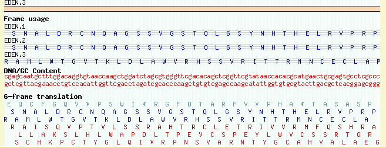

Figure 1: volvox1.gff data with volvox1.conf config file.
This is a quick tutorial to take you through the main features and gotchas of gbrowse. This tutorial assumes that you have successfully setup MySQL, Perl, GD, BioPerl and the other gbrowse dependencies, and that you have successfully loaded and browsed the yeast test data.
We will be working with simulated Volvox genome annotation data. The database will be named "volvox" and gbrowse will be invoked with this URL:
http://your.host/cgi-bin/gbrowse?source=volvox
The first step is to set up a new database named "volvox." Using the mysql tool, create the database, grant yourself read/write privileges, and grant the "nobody" user read privileges:
% mysqladmin -uroot -p create volvox Enter password: ********* mysql> create database volvox; Query OK, 1 row affected (0.04 sec) mysql> grant all privileges on volvox.* to lstein@localhost; Query OK, 0 rows affected (0.00 sec) mysql> grant select on volvox.* to nobody@localhost; Query OK, 0 rows affected (0.00 sec) mysql> quit Bye
Replace "lstein" with your own login name. (Note: In this and all following examples, your input is rendered in bold text, and the output of programs is rendered in normal text.)
In the "data_files" subdirectory of this tutorial you will find the file volvox1.gff. Load this file into the newly-created database using the bp_load_gff.pl tool; the -d switch sets the database to "volvox", and the -c switch tells the loader to reinitialize (create) the database, overwriting whatever was there before.
% bp_load_gff.pl -d volvox -c volvox1.gff volvox1.gff: loading... volvox1.gff: 16 records loaded
If you look at the contents of this file, you will see that it contains a series of 15 simulated features that look like this:
ctgA example contig 1 50000 . . . Contig ctgA ctgA example my_feature 1659 1984 . + . My_feature f07 ctgA example my_feature 3014 6130 . + . My_feature f06 ctgA example my_feature 4715 5968 . - . My_feature f05 ctgA example my_feature 13280 16394 . + . My_feature f08 ...
Each feature has a "source" of example, and a type of "my_feature", and occupies a short range (roughly 1.5k) on a contig named "ctgA." In addition to the features themselves, there is an entry for the contig itself (type "contig"). This entry is needed to tell gbrowse what the length of ctgA is. We will look at the various columns of this file in more detail later.
Now we will need a gbrowse config file to tell gbrowse how to render this data set. In the subdirectory conf_files/, you will find a sample configuration file named "volvox1.conf." Copy this into your gbrowse configuration directory (e.g. /usr/local/apache/conf/gbrowse.conf on Unix systems, C:\Program Files\Apache Group\Apache2\conf\gbrowse.conf on Windows systems). If a password is required to access the volvox database (in other words, you didn't follow the tutorial instructions to the letter!) you will need to customize this config file by adding the appropriate password to the line that reads:
pass = *put password here*
You should now be able to view the data set. Point your web browser at http://your.host/cgi-bin/gbrowse?source=volvox and type in "ctgA" in the search box. The result is shown in Figure 1.
Figure 1: volvox1.gff data with volvox1.conf config file.
Let's look at the detail file we loaded in more detail. The load file uses a semi-standard known as GFF (General Feature Format). Each line of the file corresponds to a feature on the genome, and the nine columns are separated by tabs.
The 9 columns are as follows:
Now we'll look at the configuration file in more detail. Using a text editor, open the volvox.conf file from its location in the gbrowse.conf configuraton directory. (If you mess up, you can always copy a fresh version from volvox1.conf in the tutorial directory).
Ignore all the stuff in the top 90% of the file, and focus on the last
little bit, which starts with the line: ### TRACK CONFIGURATION
###:
[ExampleFeatures] feature = my_feature glyph = generic stranded = 1 bgcolor = blue height = 10 key = Example Features
This is a "stanza" that describes one of the tracks displayed by GBrowse. The track has an internal name of "ExampleFeatures" which you can use in the URL to turn the track on. The internal name is enclosed by square brackets.
Following the track name are a series of options that configure the track. The "feature" option indicates what feature type(s) to display inside the track. It's currently set to display the "my_feature" feature type. The "glyph" option specifies the shape of the rendered feature. The default is "generic", which is a simple filled box, but there are dozens of glyphs to choose from. The "stranded" option tells the generic glyph to try to display the strandedness of the feature -- this is what creates the little arrow at the end of the box. "bgcolor" and "height" control the background color and height of the glyph respectively, and "key" assigns the track a human-readable label.
Let's experiment with changing the track definition. First, let's change the color of the glyph. With your text editor, change the bgcolor option from blue to "orange", save it, and reload the page. The features should change immediately as shown in Figure 2.
Figure 2: A Feature of a Different Color
Please experiment with other changes! Try changing the height to 5, the key to "Skinny features" and the stranded option to 0 (which means "false"). Just by changing a few options, you can create a very distinctive track.
Now let's try changing the glyph. One of the standard glyphs was designed to show PCR primer pairs and is called "primers". Change "glyph = generic" to "glyph = primers" and reload the page. Depending on other changes that you might have made earlier, the result will look something like Figure 3.
Figure 3: Using the primers Glyph
We'll see other examples of glyphs later on. To get a list of the most popular glyphs and the options that are available for them, see the file CONFIGURE_HOWTO.txt, located in the docs/ subdirectory of the gbrowse distribution. Or for the gory and bleeding edge details, run the command:
% perldoc Bio::Graphics::Panel
This produces copious documentation on the Perl interface to all the glyphs, including some amazingly obscure ones, from which you should be able to deduce the gbrowse equivalents.
Now we'll look at the interaction between feature names and gbrowse's search box. If you look through the volvox1.gff data file, you'll see that all the example features are named, and that their class is "My_feature."
GBrowse has a very flexible search feature. You can type in the name of a reference sequence, such as "ctgA", and it will display the entire thing, or you can type in a range in the format "ctgA:start..stop". Try "ctgA:5000..8000" to see this at work.
In addition, GBrowse can search for features by name. By default, the name of the object must be preceded by its class in the format Class:name. For example, if we are searching for My_feature "f07", we could type "My_feature:f07" into the search box. Try this now.
You probably don't want to remember to enter the class of the object to search for a feature. Fortunately, it is easy to declare one or more classes "automatic" and specify the order in which gbrowse will search for them. To do this with our example database, open up the volvox.conf config file, find the option named "automatic classes", and change it to read:
automatic classes = My_feature
This tells gbrowse that when the user types in an unqualified feature name, it should search the My_feature class for a match. You can now type "f07" directly into the search field and gbrowse will find and display it. If you wish, you may list several (or many!) automatic classes on this line. Just separate them by spaces:
automatic classes = My_feature Gene Transcript Contig Chromosome
For fun, try searching for the following:
By default, gbrowse will display the name of the feature above its glyph provided that there is sufficient space to do this. Optionally, you can also attach some descriptive text to the feature. This text will be displayed below the feature, and can also be searched.
You can place descriptions, notes and other comments into the ninth column of the GFF load file. The example file data_files/volvox2.gff shows how this is done. An expert from the top of the file looks like this:
ctgA example motif 11911 15561 . + . Motif m11 ; Note "kinase" ctgA example motif 13801 14007 . - . Motif m05 ; Note "helix loop helix" ctgA example motif 14731 17239 . - . Motif m14 ; Note "kinase" ctgA example motif 15396 16159 . + . Motif m03 ; Note "zinc finger"
This defines several new features of type "motif". The ninth column, in addition to giving each of the motifs names (e.g. "Motif m11"), adds a "Note" attribute to each feature. Attributes are name/value pairs, where the attribute name is a single word, and the value is a piece of text. If the value text contains white space (spaces or tabs), the text must be enclosed by double quotes as shown above. It doesn't hurt to enclose the text in quotes even if it doesn't contain white space, which is what we've done here. Attribute pairs are separated from the Class/name pair by a semicolon, as shown above.
We will see later how to take advantage of different types of attributes. For now, it is only important to know that an attribute named Note is automatically displayed and made searchable. To see this work, load volvox2.gff into the volvox database, using bp_load_gff.pl without the -c (create) switch:
% bp_load_gff.pl -d volvox volvox2.gff volvox2.gff: loading... volvox2.gff: 15 records loaded
HINT: If at any point you mess up a database load and want to start fresh, just run this command from within the tutorials data_files directory:bp_load_gff.pl -c -d volvox volvox1.gff volvox2.gff ...This will reinitialize the database and load fresh data from the .gff files listed in the command.
To display this newly-loaded data set, open up volvox.conf and add the following new stanza to the config file:
[Motifs] feature = motif glyph = span height = 5 description = 1 key = Example motifs
This defines a new track whose internal name is "Motifs." The corresponding feature type is "motif" and it uses the "span" glyph, a graphic that displays a horizontal line capped by vertical endpoints. The height is set to five pixels, and the human-readable key is set to "Example motifs." A new option, "description" is a flag that tells gbrowse to display the Note attribute, if any. Any non-zero value means true.
The result is shown in figure 4.
Figure 4: Showing the Notes attribute
A copy of this config file is also available for you to use in volvox2.conf.
To show that gbrowse will search the notes for keyword matches, try typing in "kinase." You will be presented with a list of all the motifs whose Note attribute contains the word "kinase."
Many features are discontinuous. Examples include spliced transcripts, and gapped sequence similarity alignments, such as the alignment of cDNAs to the genome. Gbrowse can deal with such features easily provided that you take a little care in setting them up.
The data file volvox3.gff contains a simulated data set of a series of gapped nucleotide alignments. An excerpt from the file is here:
ctgA example match 6885 8999 . - . Match seg03 ctgA example similarity 6885 7241 . - . Match seg03 ctgA example similarity 7410 7737 . - . Match seg03 ctgA example similarity 8055 8080 . - . Match seg03 ctgA example similarity 8306 8999 . - . Match seg03 ctgA example match 5233 9825 . - . Match seg04 ctgA example similarity 5233 5302 . - . Match seg04 ctgA example similarity 5800 6101 . - . Match seg04 ctgA example similarity 6442 6854 . - . Match seg04 ctgA example similarity 7106 7211 . - . Match seg04 ctgA example similarity 7695 8177 . - . Match seg04 ctgA example similarity 8545 8783 . - . Match seg04 ctgA example similarity 8869 8935 . - . Match seg04 ctgA example similarity 9404 9825 . - . Match seg04
Each segmented feature is represented by several lines in the GFF file that share the same feature name. Each feature has a single GFF line of type "match" whose start and end coordinates correspond to the full length of the alignment. Following this are one or more lines of type "similarity" with start and end coordinates indicating a section of the match. The relationship is the same as between a BLAST hit and its HSPs.
For example "Match seg03" starts at position 6885 and ends at 8999. It has four subsegments, one from 6885..7241, another from 7410..7737, and so forth.
The types "match" and "similarity" are not arbitrary, but are needed to tell the gbrowse database what the relationship between the full-length feature and its subparts are. The specific type names expected are mediated by a series of "aggregators" -- code modules that are loaded when gbrowse starts up. We will see later in this section how to manipulate these aggregators and to define custom ones.
Load volvox3.gff into the volvox database using bp_load_gff.pl. Now edit volvox.conf to add the following track definition:
[Alignments] feature = match glyph = segments key = Example alignments
This is declaring a new track named "Alignments" which displays features of type "match" using a glyph named "segments". The segments glyph is specialized for displaying objects that have multiple similar subparts.
Save the modified config file and reload the page in the browser. Disappointingly, you'll see something like Figure 5. Instead of showing multi-segmented features, the track shows a single solid box that spans the entire length of the feature.
Figure 5: Without activating an aggregator, multisegmented features do not displayed properly
To make multipart features display correctly, you must activate or define an appropriate aggregator. This is very easy for the similarity/match relationship, because there's already a predefined aggregator named "match." Reopen the volvox.conf configuration file, and find the option line near the top of the file that reads "aggregators = ". Change this to read as follows:
aggregators = match
This is telling gbrowse to turn on the "match" aggregator. Now reload. You should see a much-improved image similar to Figure 6.
Figure 6: Turning on the "match" aggregator allows gbrowse to recognize that the match feature has subparts
| Aggregator name | Main type | Subtype(s) | Purpose |
|---|---|---|---|
| alignment | (none) | similarity | nucleotide and protein alignments where the full extent of the match is unknown |
| coding | mRNA | CDS | Used in concert with the "cds" glyph to display the reading frame used by the coding portion of each edon. |
| clone | (none) | Clone_left_end Clone_right_end | Used for cases in which clone ends have been mapped to the genome, but one of the ends may be missing. |
| match | match | similarity, HSP | nucleotide and protein alignments |
| processed_transcript | mRNA | CDS, UTR, 5'-UTR, 3'-UTR transcription_start_site, polyA_site | the canonical spliced gene |
To use any of these aggregators, follow this recipe:
aggregators = match processed_transcript
clone.
feature. For example
feature=processed_transcript.
Gbrowse can display protein-coding genes in various shapes and styles. The easiest way to set this up is to use the "processed_transcript" aggregator and its companion glyph also called "processed_transcript." Take a look at the file volvox5.gff, which defines a gene named EDEN, and its three spliced forms named EDEN.1, EDEN.2 and EDEN.3. Here is the top part of the file:
ctgA example gene 1000 9000 . + . Gene EDEN ; Note "protein kinase" ctgA example mRNA 1050 9000 . + . mRNA EDEN.1 ; Gene EDEN ctgA example 5'-UTR 1050 1200 . + . mRNA EDEN.1 ctgA example CDS 1201 1500 . + 0 mRNA EDEN.1 ctgA example CDS 3000 3902 . + 0 mRNA EDEN.1 ctgA example CDS 5000 5500 . + 0 mRNA EDEN.1 ctgA example CDS 7000 7610 . + 0 mRNA EDEN.1 ctgA example 3'-UTR 7611 9000 . + . mRNA EDEN.1 ctgA example mRNA 1050 9000 . + . mRNA EDEN.2 ; Gene EDEN ctgA example 5'-UTR 1050 1200 . + . mRNA EDEN.2 ...
The first line of the file defines the gene as a whole, starting at position 1000 of ctgA and extending to position 9000. Following this, there are three sets of lines that define the structure of the spliced forms EDEN.1, EDEN.2, and EDEN.3, only the first of which is shown in its entirety here. By convention, the whole transcript is represented as type "mRNA". It has subparts named "5'-UTR", CDS, and "3'-UTR", where the UTR features are the 5' and 3' untranslated regions, respectively, and CDS is the coding region. Note how the CDS is split by splicing among multiple discontinuous locations on the reference sequence. The UTRs can be split in this way too.
Each mRNA and its subparts are grouped together under a common name in the ninth column ("mRNA EDEN.1", "mRNA EDEN.2", and so forth). In addition, each mRNA has a Gene attribute that ties it to the EDEN gene itself ("Gene EDEN"). Although this isn't required for the display, doing this will identify the various alternative transcripts as belonging to the same gene should you wish to use the gbrowse database for data mining. It will also show the user what gene the transcript belongs to when he or she clicks on it for details.
HINT: If you prefer not to distinguish between 5' and 3' UTRs, you can simply use "UTR" as the type. If you don't know where the UTRs are, just leave them blank. If you'd rather think in terms of exons and introns, then check out the "transcript" aggregator and its corresponding "transcript" glyph.
Go ahead and use bp_load_gff.pl to load volvox5.gff. Then make the following changes to volvox.conf:
aggregators = match
BAC{left_end_read,right_end_read/BAC}
processed_transcript
[Transcripts]
feature = processed_transcript
glyph = processed_transcript
bgcolor = peachpuff
description = 1
key = Protein-coding genes
The updated aggregators option loads the processed_transcript aggregator, which knows how to put CDS and UTR features together to form a spliced transcript. The new Transcripts track associates aggregated processed_transcript features with the like-named glyph, sets its background color to peachpuff (yes, there really is a color by this name!), turns on the description lines, and sets the human readable track name to "Protein-coding genes."
Upon reloading the page, turning on the new "Protein-coding genes" track, and viewing the region around 1..10K, you'll see this:
Figure 8: The canonical processed_transcript glyph
This image is nice, but we can make it even better. One problem is that the gene description (the Note in the EDEN GFF line) isn't being displayed, because the description is attached to the gene and not to the individual mRNAs. To fix this, we simply tell gbrowse to display features of type "gene" as well as those of type "processed_transcript". Modify volvox.conf so the last stanza looks like this:
[Transcripts] feature = processed_transcript gene glyph = processed_transcript bgcolor = peachpuff description = 1 key = Protein-coding genes /pre>
The only change is that there are now two types listed for the feature option, "processed_transcript" and "gene." This is telling gbrowse to place both feature types in the same track. If we reload the page, it now looks like this:
Figure 9: Showing the gene as well as its transcripts
The processed_transcript glyph has a number of options that you can use to customize its appearance:
| Option Name | Possible values | Description |
|---|---|---|
| thin_utr | 0 (false), 1 (true) | If true, makes UTRs half-height. |
| utr_color | a color name ("gray" by default) | Changes the UTR color. |
| decorated_introns | 0 (false), 1 (true) | If true, puts little arrowheads on the introns to indicate direction of transcription. |
Using these options, we can make the track look like the UCSC Genome Browser (Figure 10).
[Transcripts] feature = processed_transcript gene glyph = processed_transcript height = 8 bgcolor = black utr_color = black thin_utr = 1 decorate_introns = 1 description = 1 key = Protein-coding genes
Figure 10: A UCSC Genome Browser lookalike
Continuing with the example from the last section, the third exon of EDEN.1 is shared with EDEN.3. But is the reading frame preserved? The "coding" aggregator used in concert with the "cds" glyph creates a display that will visualize each CDS's reading frame.
To see this work, add the predefined "coding" aggregator to the list of aggregators:
aggregators = match
BAC{left_end_read,right_end_read/BAC}
processed_transcript
coding
The "coding" aggregator is similar to processed_transcript, except that it only pays attention to the CDS parts of the transcript. It was designed to work hand-in-hand with the "cds" glyph. (For historical reasons, the glyph is called "cds" rather than "coding.")
Now add the following short stanza to the bottom of the configuration file:
[CDS] feature = coding glyph = cds key = Frame usage
When you reload the page and turn this track on, you'll see a "musical staff" representation of the frame usage (Figure 11).
Figure 11: The "cds" glyph shows the reading frame using a musical staff notation
If none of the predefined aggregators meets your needs, it is simple to define a custom one of your own. For example, say you wanted to display a feature of type "BAC", whose subparts are of type "left_end_read" and "right_end_read" (possibly corresponding to a BAC clone mapping experiment). Here is a GFF representation of this:
ctgA example BAC 1000 20000 . . . BAC b101.2 ; Note "Fingerprinted BAC with end reads" ctgA example left_end_read 1000 1500 . + . BAC b101.2 ctgA example right_end_read 19500 20000 . - . BAC b101.2
This is the contents of volvox4.gff. Go ahead and load this into the database now. To visualize this you will:
To define the custom aggregator, open volvox.conf and add the following to the aggregators line:
aggregators = BAC{left_end_read,right_end_read/BAC}
The thing named BAC{left_end_read,right_end_read/BAC} is the custom aggregator definition. Its format is aggregator_name{subtype1,subtype2,subtype3.../main_type}. Here we're defining an aggregator of type "BAC" which has subparts of type "left_end_read" and "right_end_read" (separated by commas) and top-level type of "BAC" (separated from the subparts by a slash). Although it's not necessary to use the same name for both the main feature type and the aggregator, it's often convenient to do so.
If you want to continue using the predefined "match" aggregator in addition to the new "BAC" one, just add them both to the aggregators line separated by whitespace, like this:
aggregators = BAC{left_end_read,right_end_read/BAC} match
aggregators = BAC{left_end_read,right_end_read/BAC}
match
gbrowse config file options can continue across multiple lines
provided that each additional line is indented.
Now add the appropriate stanza to the bottom of volvox.conf:
[Clones] feature = BAC glyph = segments bgcolor = yellow strand_arrow = 1 description = 1 key = Fingerprinted BACs
With this new track turned on, look at ctgA:1..24200. It will show that gbrowse has correctly picked up and rendered the relationship between the whole BAC and its two end reads (Figure 7).
Figure 7: The glyph produced by a custom BAC aggregator
For your convenience, the configuration file with all the modifications made up through this point of the tutorial can be found in conf_files/volvox3.conf.
Gbrowse can take advantage of DNA sequence data in several ways:
So we've been working with feature coordinates, but no actual DNA sequence has been loaded into the volvox database. We will again rebuild the database, this time loading in a simulated DNA file in fasta format. From inside the tutorial data_files directory, type this command:
% bp_load_gff.pl -c -d volvox -f volvox.fa volvox1.gff volvox2.gff volvox3.gff volvox4.gff volvox5.gff volvox1.gff: loading... volvox1.gff: 16 records loaded volvox2.gff: loading... volvox2.gff: 15 records loaded volvox3.gff: loading... volvox3.gff: 165 records loaded volvox4.gff: loading... volvox4.gff: 3 records loaded volvox5.gff: loading... volvox5.gff: 21 records loaded Loading fasta file volvox.fa volvox.fa: 1 records loaded
The DNA is now loaded. To see that it worked, add two new stanzas to the volvox.conf configuration file:
[DNA] glyph = dna global feature = 1 height = 40 do_gc = 1 fgcolor = red axis_color = blue strand = both key = DNA/GC Content [Translation] glyph = translation global feature = 1 height = 40 fgcolor = purple start_codons = 0 stop_codons = 1 translation = 6frame key = 6-frame translation
The "DNA" track uses a specialized glyph called "dna". At low magnifications (zoomed way out), this glyph draws a GC content plot. At high magnifications (zoomed way in), this glyph draws the dna. Of the various options given in the example stanza, the most important one is "global feature", which is set to a true value (1). This tells gbrowse that the stanza doesn't correspond to a specific feature type, but should be displayed globally. Other options control whether to draw one or both strands, whether to draw the GC content histogram, and what colors to use.
Similarly, the "Translation" track uses a glyph called "translation", which draws three or six-frame conceptual translations. At low magnifications (zoomed way out), this glyph draws little symbols indicating where start and stop codons are. At high magnifications, the actual amino acid sequence comes into view. Again, the most important option is "global feature", which is set to a true value to tell gbrowse that the track isn't attached to a particular feature type, but is to be generated automatically. Other options control the height of the glyph, whether to draw start and/or stop codon symbols, and whether to generate a 3frame or 6frame translation.
Figures 7a and 7b show the browser at low and high magnification, with both tracks activated. Notice that the coding track ("cds" glyph) notices that the DNA is available and generates the transcripts' protein translations automatically!
(7A)

(7B)

Figure 7: Viewing DNA/GC content and 6-frame translation. (a) low magnification; (b) high magnification